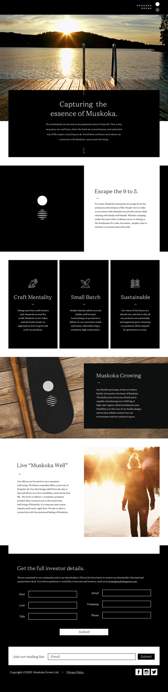
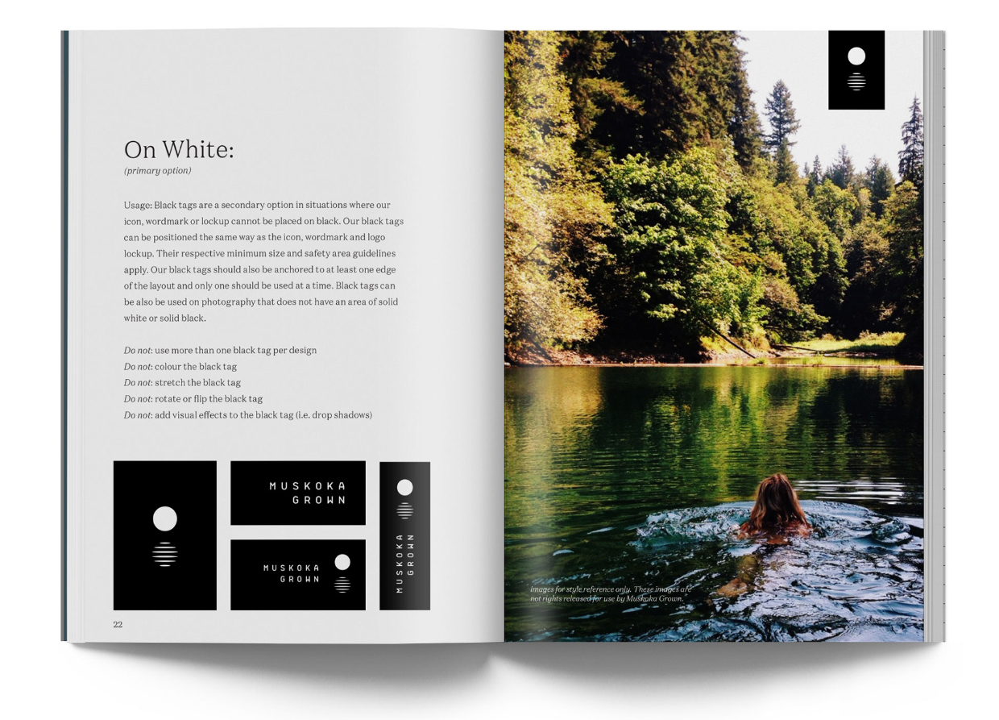
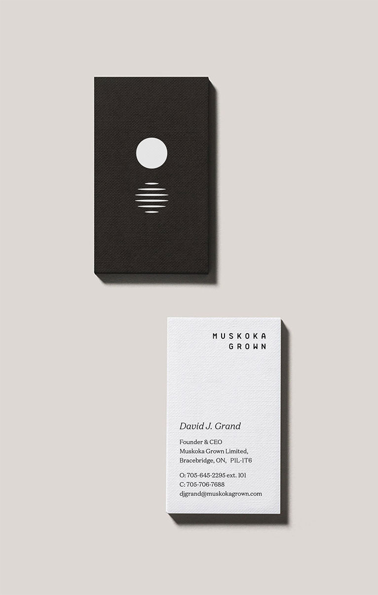

With the legalization of Cannabis across Canada, Muskoka Medical Marijuana – their original name - approached us for support. They wanted to better understand their target market in order to launch a consumer-facing brand and carve out a niche for their product offering.
Landing on a name that captured our new positioning was the outcome of a remarkably enjoyable workshop. Muskoka Grown was a unanimous favourite amongst the team members as it captured the essence of our Muskoka roots while delivering a layer of next-generation appeal.
When considering the identity, it was necessary to avoid the common pitfalls and clichés of traditional Muskoka – Muskoka chairs, Canadiana, red, blue, and yellow colour palettes. The icon chosen depicts the rising and setting sun/moon reflecting on the lakes of Muskoka.
The sun symbolizes life, power, strength, energy, self, and clarity, while the moon is universally representative of the rhythm of time, and embodies immortality and enlightenment. Bringing these elements together in a modern and stylized black and white palette offers a youthful approach that immediately creates an emotional connection with the viewer.
